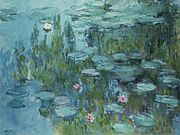

Oscar-Claude Monet French: 14 November 1840 – 5 December 1926; was a French painter, a founder of French Impressionist painting and the most consistent and prolific practitioner of the movement's philosophy of expressing one's perceptions before nature, especially as applied to plain air landscape painting. The term "Impressionism" is derived from the title of his painting Impression, soleil levant (Impression, Sunrise), which was exhibited in 1874 in the first of the independent exhibitions mounted by Monet and his associates as an alternative to the Salon de Paris (Anonymous, 2019).
'Impression, Sunrise' - 1874
Impression, Sunrise was painted in 1872, depicting a Le Havre port landscape. From the painting's title the art critic Louis Leroy, in his review, "L'Exposition des Impressionnistes," which appeared in Le Charivari, coined the term "Impressionism". It was intended as disparagement, but the Impressionists appropriated the term for themselves (Anonymous, 2019).
Impressionism
The first Impressionist exhibition was held in 1874 at 35 boulevard des Capucines, Paris, from 15 April to 15 May. The primary purpose of the participants was not so much to promote a new style, but to free themselves from the constraints of the Salon de Paris. The exhibition, open to anyone prepared to pay 60 francs, gave artists the opportunity to show their work without the interference of a jury (Anonymous, 2019).
In addition to Impression: Sunrise, Monet presented four oil paintings and seven pastels. Among the paintings he displayed was The Luncheon (1868), which features Camille Doncieux and Jean Monet, and which had been rejected by the Paris Salon of 1870. Also in this exhibition was a painting titled Boulevard des Capucines, a painting of the boulevard done from the photographer Nadar's apartment at no. 35 (Anonymous, 2019).
'The Luncheon' - 1868 -- 'Boulevard des Capucines' - 1974 -- 'Madame Monet in a Japanese Kimono' - 1875
Water Lilies
Monet's ambition of documenting the French countryside led him to adopt a method of painting the same scene many times in order to capture the changing of light and the passing of the seasons. From 1883, Monet lived in Giverny, where he purchased a house and property and began a vast landscaping project which included lily ponds that would become the subjects of his best-known works. He began painting the water lilies in 1899, first in vertical views with a Japanese bridge as a central feature and later in the series of large-scale paintings that was to occupy him continuously for the next 20 years of his life (Anonymous, 2019).
'Water Lillies' - 1899 -- 1906 -- 1915
When Monet traveled to Paris to visit the Louvre, he witnessed painters copying from the old masters. Having brought his paints and other tools with him, he would instead go and sit by a window and paint what he saw. Monet was in Paris for several years and met other young painters, including Édouard Manet and others who would become friends and fellow Impressionists (Anonymous, 2019).
Monet is an excellent example of doing art simply for one's self rather than for following in another's footsteps simply because it appears as the correct thing to do. Fame and success were of no concern for him, he wished to commemorate the country side and scenes of his choosing and so, he simply did just that. For this, he is a truly influential artist and the father of the artistic movement Impressionism, one we still see practiced very regularly in our modern world today.

'The Cliffs at Etretat' - 1885
Reference: Claude Monet. (2019, November 17). Retrieved from https://en.wikipedia.org/wiki/Claude_Monet.
Click to visit reference page for more informationAre you enjoying this historic artist portion of the website so far?